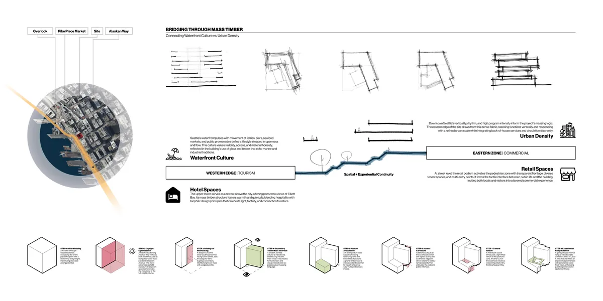
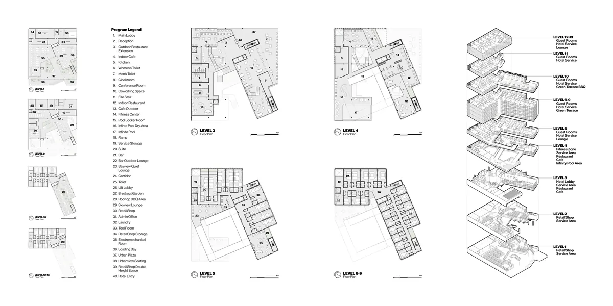
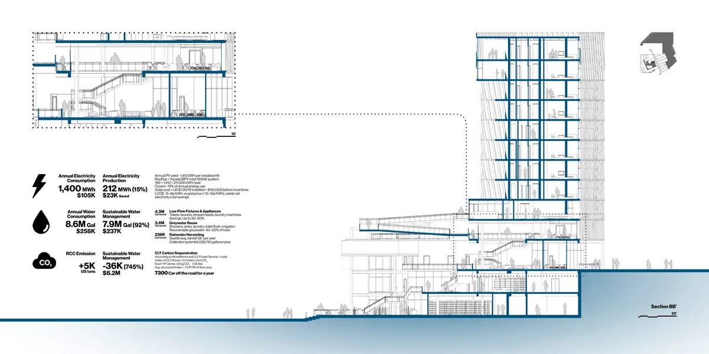

01 / 05
Bridge1400
Connecting waterfront culture to urban density
Bridge1400 sits on the threshold between Seattle's mercantile downtown and its waterfront. Instead of smoothing over that break, the project makes it spatial: a tall void cuts through the podium as a civic canyon linking Alaskan Way to Western Avenue.
A grand stair works as both passage and pause, and a slow ramp climbs past planted terraces with filtered views of Elliott Bay. Above the four-level retail and lobby podium, a mass timber hotel tower frames the water to the northwest and the city to the southeast.
Site
Between Pike Place Market and the waterfront promenade, the site takes its cues from both: vertical density to the east, openness and movement to the west.
 Overlook WalkMarket-to-waterfront link, opened 2024Pike Place MarketPublic market since 1907SiteWestern Ave and Union StAlaskan WayWaterfront boulevard
Overlook WalkMarket-to-waterfront link, opened 2024Pike Place MarketPublic market since 1907SiteWestern Ave and Union StAlaskan WayWaterfront boulevard- Overlook Walk Market-to-waterfront link, opened 2024
- Pike Place Market Public market since 1907
- Site Western Ave and Union St
- Alaskan Way Waterfront boulevard
Form
Eight moves shape the block: a full zoning envelope, a daylight cut along Alaskan Way, an interlocking sloped tower, podium voids for entry and egress, a central atrium and the experiential ramp from Level 4 to Level 5.

Mass timber
Above the four-level podium, the hotel tower is built in mass timber. Exposed wood gives the guest rooms warmth and quiet, carries the project's biophilic approach, and echoes the timber and glass of the working waterfront. Timber also stores carbon instead of emitting it, which the design study estimates below.
CLT storage rate from WoodWorks and the U.S. Forest Service, as cited in the design study.
Plans
Retail activates the first two levels. The hotel lobby, restaurants and an infinity pool fill the podium, and guest rooms stack above with terraces and a sky lounge.

Sections
Double-height retail glazing, a restaurant stair through a central void, and the pool-to-bar ramp are read together in section. Rooftop and facade PV, greywater reuse and rainwater harvesting are sized in the performance study.

